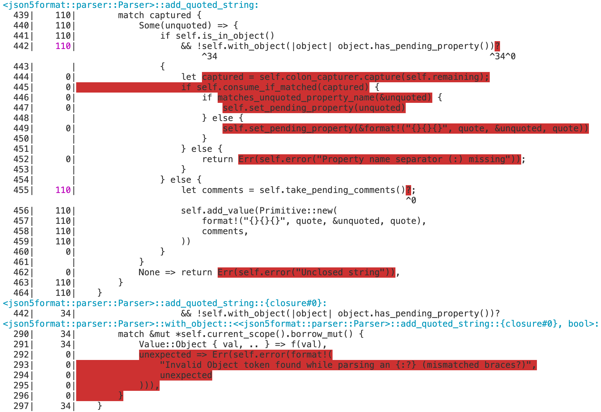
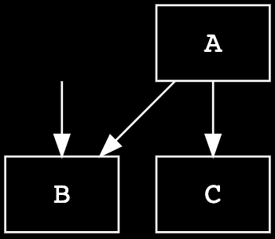

LLVM Source-Based Code Coverage
- Recommended
config.tomlsettings - Rust symbol mangling
- Components of LLVM Coverage Instrumentation in
rustc - Testing LLVM Coverage
- Implementation Details of the
InstrumentCoverageMIR Pass
rustc supports detailed source-based code and test coverage analysis
with a command line option (-C instrument-coverage) that instruments Rust
libraries and binaries with additional instructions and data, at compile time.
The coverage instrumentation injects calls to the LLVM intrinsic instruction
llvm.instrprof.increment at code branches
(based on a MIR-based control flow analysis), and LLVM converts these to
instructions that increment static counters, when executed. The LLVM coverage
instrumentation also requires a Coverage Map that encodes source metadata,
mapping counter IDs--directly and indirectly--to the file locations (with
start and end line and column).
Rust libraries, with or without coverage instrumentation, can be linked into
instrumented binaries. When the program is executed and cleanly terminates,
LLVM libraries write the final counter values to a file (default.profraw or
a custom file set through environment variable LLVM_PROFILE_FILE).
Developers use existing LLVM coverage analysis tools to decode .profraw
files, with corresponding Coverage Maps (from matching binaries that produced
them), and generate various reports for analysis, for example:

Detailed instructions and examples are documented in the rustc book.
Recommended config.toml settings
When working on the coverage instrumentation code, it is usually necessary to
enable the profiler runtime by setting profiler = true in [build].
This allows the compiler to produce instrumented binaries, and makes it possible
to run the full coverage test suite.
Enabling debug assertions in the compiler and in LLVM is recommended, but not mandatory.
# Similar to the "compiler" profile, but also enables debug assertions in LLVM.
# These assertions can detect malformed coverage mappings in some cases.
profile = "codegen"
[build]
# IMPORTANT: This tells the build system to build the LLVM profiler runtime.
# Without it, the compiler can't produce coverage-instrumented binaries,
# and many of the coverage tests will be skipped.
profiler = true
[rust]
# Enable debug assertions in the compiler.
debug-assertions = true
Rust symbol mangling
-C instrument-coverage automatically enables Rust symbol mangling v0 (as
if the user specified -C symbol-mangling-version=v0 option when invoking
rustc) to ensure consistent and reversible name mangling. This has two
important benefits:
- LLVM coverage tools can analyze coverage over multiple runs, including some changes to source code; so mangled names must be consistent across compilations.
- LLVM coverage reports can report coverage by function, and even separates out the coverage counts of each unique instantiation of a generic function, if invoked with multiple type substitution variations.
Components of LLVM Coverage Instrumentation in rustc
LLVM Runtime Dependency
Coverage data is only generated by running the executable Rust program. rustc
statically links coverage-instrumented binaries with LLVM runtime code
(compiler-rt) that implements program hooks
(such as an exit hook) to write the counter values to the .profraw file.
In the rustc source tree,
library/profiler_builtins bundles the LLVM compiler-rt code into a Rust library crate.
Note that when building rustc,
profiler_builtins is only included when build.profiler = true is set in config.toml.
When compiling with -C instrument-coverage,
CrateLoader::postprocess() dynamically loads
profiler_builtins by calling inject_profiler_runtime().
MIR Pass: InstrumentCoverage
Coverage instrumentation is performed on the MIR with a MIR pass
called InstrumentCoverage. This MIR pass analyzes
the control flow graph (CFG)--represented by MIR BasicBlocks--to identify
code branches, attaches FunctionCoverageInfo to the function's body,
and injects additional Coverage statements into the
BasicBlocks.
A MIR Coverage statement is a virtual instruction that indicates a counter
should be incremented when its adjacent statements are executed, to count
a span of code (CodeRegion). It counts the number of times a
branch is executed, and is referred to by coverage mappings in the function's
coverage-info struct.
Note that many coverage counters will not be converted into
physical counters (or any other executable instructions) in the final binary.
Some of them will be (see CoverageKind::CounterIncrement),
but other counters can be computed on the fly, when generating a coverage
report, by mapping a CodeRegion to a coverage-counter expression.
As an example:
#![allow(unused)] fn main() { fn some_func(flag: bool) { // increment Counter(1) ... if flag { // increment Counter(2) ... } else { // count = Expression(1) = Counter(1) - Counter(2) ... } // count = Expression(2) = Counter(1) + Zero // or, alternatively, Expression(2) = Counter(2) + Expression(1) ... } }
In this example, four contiguous code regions are counted while only incrementing two counters.
CFG analysis is used to not only determine where the branches are, for
conditional expressions like if, else, match, and loop, but also to
determine where expressions can be used in place of physical counters.
The advantages of optimizing coverage through expressions are more pronounced
with loops. Loops generally include at least one conditional branch that
determines when to break out of a loop (a while condition, or an if or
match with a break). In MIR, this is typically lowered to a SwitchInt,
with one branch to stay in the loop, and another branch to break out of the
loop. The branch that breaks out will almost always execute less often,
so InstrumentCoverage chooses to add a CounterIncrement to that branch, and
uses an expression (Counter(loop) - Counter(break)) for the branch that
continues.
The InstrumentCoverage MIR pass is documented in
more detail below.
Counter Injection and Coverage Map Pre-staging
When the compiler enters the Codegen phase, with a
coverage-enabled MIR, codegen_statement() converts each
MIR Statement into some backend-specific action or instruction.
codegen_statement() forwards Coverage statements to
codegen_coverage():
#![allow(unused)] fn main() { pub fn codegen_statement(&mut self, mut bx: Bx, statement: &mir::Statement<'tcx>) -> Bx { ... match statement.kind { ... mir::StatementKind::Coverage(box ref coverage) => { self.codegen_coverage(bx, coverage, statement.source_info.scope); } }
codegen_coverage() handles inlined statements and then forwards the coverage
statement to Builder::add_coverage, which handles each CoverageKind as
follows:
- For both
CounterIncrementandExpressionUsed, the underlying counter or expression ID is passed through to the correspondingFunctionCoveragestruct to indicate that the corresponding regions of code were not removed by MIR optimizations. - For
CoverageKind::CounterIncrements, an instruction is injected in the backend IR to increment the physical counter, by calling theBuilderMethodinstrprof_increment().
#![allow(unused)] fn main() { fn add_coverage(&mut self, instance: Instance<'tcx>, coverage: &Coverage) { ... let Coverage { kind } = coverage; match *kind { CoverageKind::CounterIncrement { id } => { func_coverage.mark_counter_id_seen(id); ... bx.instrprof_increment(fn_name, hash, num_counters, index); } CoverageKind::ExpressionUsed { id } => { func_coverage.mark_expression_id_seen(id); } } } }
The function name
instrprof_increment()is taken from the LLVM intrinsic call of the same name (llvm.instrprof.increment), and uses the same arguments and types; but note that, up to and through this stage (even though modeled after LLVM's implementation for code coverage instrumentation), the data and instructions are not strictly LLVM-specific.But since LLVM is the only Rust-supported backend with the tooling to process this form of coverage instrumentation, the backend for
Coveragestatements is only implemented for LLVM, at this time.
Coverage Map Generation
With the instructions to increment counters now implemented in LLVM IR, the last remaining step is to inject the LLVM IR variables that hold the static data for the coverage map.
rustc_codegen_llvm's compile_codegen_unit() calls
coverageinfo_finalize(),
which delegates its implementation to the
rustc_codegen_llvm::coverageinfo::mapgen module.
For each function Instance (code-generated from MIR, including multiple
instances of the same MIR for generic functions that have different type
substitution combinations), mapgen's finalize() method queries the
Instance-associated FunctionCoverage for its Counters, Expressions,
and CodeRegions; and calls LLVM codegen APIs to generate
properly-configured variables in LLVM IR, according to very specific
details of the LLVM Coverage Mapping Format
(Version 6).1
The Rust compiler (as of Jul 2023) supports LLVM Coverage Mapping Format 6. The Rust compiler will automatically use the most up-to-date coverage mapping format version that is compatible with the compiler's built-in version of LLVM.
#![allow(unused)] fn main() { pub fn finalize<'ll, 'tcx>(cx: &CodegenCx<'ll, 'tcx>) { ... if !tcx.sess.instrument_coverage_except_unused_functions() { add_unused_functions(cx); } let mut function_coverage_map = match cx.coverage_context() { Some(ctx) => ctx.take_function_coverage_map(), None => return, }; ... let mut mapgen = CoverageMapGenerator::new(); for (instance, function_coverage) in function_coverage_map { ... let coverage_mapping_buffer = llvm::build_byte_buffer(|coverage_mapping_buffer| { mapgen.write_coverage_mapping(expressions, counter_regions, coverage_mapping_buffer); }); }
code snippet trimmed for brevity
One notable first step performed by mapgen::finalize() is the call to
add_unused_functions():
When finalizing the coverage map, FunctionCoverage only has the CodeRegions
and counters for the functions that went through codegen; such as public
functions and "used" functions (functions referenced by other "used" or public
items). Any other functions (considered unused) were still parsed and processed
through the MIR stage.
The set of unused functions is computed via the set difference of all MIR
DefIds (tcx query mir_keys) minus the codegenned DefIds (tcx query
codegened_and_inlined_items). add_unused_functions() computes the set of
unused functions, queries the tcx for the previously-computed CodeRegions,
for each unused MIR, synthesizes an LLVM function (with no internal statements,
since it will not be called), and adds a new FunctionCoverage, with
Unreachable code regions.
Testing LLVM Coverage
(See also the compiletest documentation for the tests/coverage
test suite.)
Coverage instrumentation in the MIR is validated by a mir-opt test:
tests/mir-opt/instrument_coverage.rs.
Coverage instrumentation in LLVM IR is validated by the tests/coverage
test suite in coverage-map mode.
These tests compile a test program to LLVM IR assembly, and then
use the src/tools/coverage-dump tool to extract and pretty-print the
coverage mappings that would be embedded in the final binary.
End-to-end testing of coverage instrumentation and coverage reporting is
performed by the tests/coverage test suite in coverage-run mode,
and by the tests/coverage-run-rustdoc test suite.
These tests compile and run a test program with coverage
instrumentation, then use LLVM tools to convert the coverage data into a
human-readable coverage report.
Tests in
coverage-runmode have an implicit// needs-profiler-supportdirective, so they will be skipped if the profiler runtime has not been enabled inconfig.toml.
Finally, the coverage-llvmir test compiles a simple Rust program
with -C instrument-coverage and compares the compiled program's LLVM IR to
expected LLVM IR instructions and structured data for a coverage-enabled
program, including various checks for Coverage Map-related metadata and the LLVM
intrinsic calls to increment the runtime counters.
Expected results for the coverage, coverage-run-rustdoc,
and mir-opt tests can be refreshed by running:
./x test coverage --bless
./x test coverage-run-rustdoc --bless
./x test tests/mir-opt --bless
Implementation Details of the InstrumentCoverage MIR Pass
The bulk of the implementation of the InstrumentCoverage MIR pass is performed
by the Instrumentor. For each MIR (each non-const, non-inlined
function, generic, or closure), the Instrumentor's constructor prepares a
CoverageGraph and then executes
inject_counters().
#![allow(unused)] fn main() { Instrumentor::new(&self.name(), tcx, mir_body).inject_counters(); }
The CoverageGraph is a coverage-specific simplification of the MIR control
flow graph (CFG). Its nodes are BasicCoverageBlocks, which
encompass one or more sequentially-executed MIR BasicBlocks
(with no internal branching).
Nodes and edges in the graph can have associated BcbCounters, which are
stored in CoverageCounters.
The Instrumentor's inject_counters() uses the CoverageGraph to
compute the best places to inject coverage counters, as MIR Statements,
with the following steps:
generate_coverage_spans()computes the minimum set of distinct, non-branching code regions, from the MIR. TheseCoverageSpans represent a span of code that must be counted.make_bcb_counters()generatesBcbCounter::Counters andBcbCounter::Expressions for eachCoverageSpan, plus additional intermediate expressions2 that are not associated with anyCodeRegion, but are required to compute a finalExpressionvalue for aCodeRegion.- Inject the new counters into the MIR, as new
StatementKind::Coveragestatements. - Attach all other necessary coverage information to the function's body as
FunctionCoverageInfo.
Intermediate expressions are sometimes required
because Expressions are limited to binary additions or subtractions. For
example, A + (B - C) might represent an Expression count computed from three
other counters, A, B, and C, but computing that value requires an
intermediate expression for B - C.
The CoverageGraph
The CoverageGraph is derived from the MIR (mir::Body).
#![allow(unused)] fn main() { let basic_coverage_blocks = CoverageGraph::from_mir(mir_body); }
Like mir::Body, the CoverageGraph is also a
DirectedGraph. Both graphs represent the function's
fundamental control flow, with many of the same
graph traits, supporting start_node(), num_nodes(),
successors(), predecessors(), and is_dominated_by().
For anyone that knows how to work with the MIR, as a CFG, the
CoverageGraph will be familiar, and can be used in much the same way.
The nodes of the CoverageGraph are BasicCoverageBlocks (BCBs), which
index into an IndexVec of BasicCoverageBlockData. This is analogous
to the MIR CFG of BasicBlocks that index BasicBlockData.
Each BasicCoverageBlockData captures one or more MIR BasicBlocks,
exclusively, and represents the maximal-length sequence of BasicBlocks
without conditional branches.
compute_basic_coverage_blocks() builds the
CoverageGraph as a coverage-specific simplification of the MIR CFG. In
contrast with the SimplifyCfg MIR pass, this step does
not alter the MIR itself, because the CoverageGraph aggressively simplifies
the CFG, and ignores nodes that are not relevant to coverage. For example:
- The BCB CFG ignores (excludes) branches considered not relevant
to the current coverage solution. It excludes unwind-related code3
that is injected by the Rust compiler but has no physical source
code to count, which allows a
Call-terminated BasicBlock to be merged with its successor, within a single BCB. - A
Goto-terminatedBasicBlockcan be merged with its successor as long as it has the only incoming edge to the successorBasicBlock. - Some BasicBlock terminators support Rust-specific concerns--like
borrow-checking--that are not relevant to coverage analysis.
FalseUnwind, for example, can be treated the same as aGoto(potentially merged with its successor into the same BCB).
(Note, however, that Issue #78544 considers
providing future support for coverage of programs that intentionally
panic, as an option, with some non-trivial cost.)
The BCB CFG is critical to simplifying the coverage analysis by ensuring graph path-based
queries (is_dominated_by(), predecessors, successors, etc.) have branch (control flow)
significance.
CoverageSpans
The struct CoverageSpans builds and refines a final set of
CoverageSpans, each representing the largest contiguous Span
of source within a single BCB. By definition--since each Span falls within a
BCB, the Span is also non-branching; so if any code in that Span has executed,
all code in the Span will have executed, the same number of times.
CoverageSpans::generate_coverage_spans() constructs
an initial set of CoverageSpans from the Spans associated with each MIR
Statement and Terminator.
The final stage of generate_coverage_spans() is handled by
to_refined_spans(), which iterates through the CoverageSpans,
merges and de-duplicates them, and returns an optimal, minimal set of CoverageSpans
that can be used to assign coverage Counters or Expressions, one-for-one.
make_bcb_counters()
make_bcb_counters() traverses the CoverageGraph and adds a
Counter or Expression to every BCB. It uses Control Flow Analysis
to determine where an Expression can be used in place of a Counter.
Expressions have no runtime overhead, so if a viable expression (adding or
subtracting two other counters or expressions) can compute the same result as
an embedded counter, an Expression is preferred.
TraverseCoverageGraphWithLoops
provides a traversal order that ensures all BasicCoverageBlock nodes in a
loop are visited before visiting any node outside that loop. The traversal
state includes a context_stack, with the current loop's context information
(if in a loop), as well as context for nested loops.
Within loops, nodes with multiple outgoing edges (generally speaking, these
are BCBs terminated in a SwitchInt) can be optimized when at least one
branch exits the loop and at least one branch stays within the loop. (For an
if or while, there are only two branches, but a match may have more.)
A branch that does not exit the loop should be counted by Expression, if
possible. Note that some situations require assigning counters to BCBs before
they are visited by traversal, so the counter_kind (CoverageKind for
a Counter or Expression) may have already been assigned, in which case
one of the other branches should get the Expression.
For a node with more than two branches (such as for more than two
match patterns), only one branch can be optimized by Expression. All
others require a Counter (unless its BCB counter_kind was previously
assigned).
A branch expression is derived from the equation:
Counter(branching_node) = SUM(Counter(branches))
It's important to
be aware that the branches in this equation are the outgoing edges
from the branching_node, but a branch's target node may have other
incoming edges. Given the following graph, for example, the count for
B is the sum of its two incoming edges:

In this situation, BCB node B may require an edge counter for its
"edge from A", and that edge might be computed from an Expression,
Counter(A) - Counter(C). But an expression for the BCB node B
would be the sum of all incoming edges:
Expression((Counter(A) - Counter(C)) + SUM(Counter(remaining_edges)))
Note that this is only one possible configuration. The actual choice
of Counter vs. Expression also depends on the order of counter
assignments, and whether a BCB or incoming edge counter already has
its Counter or Expression.